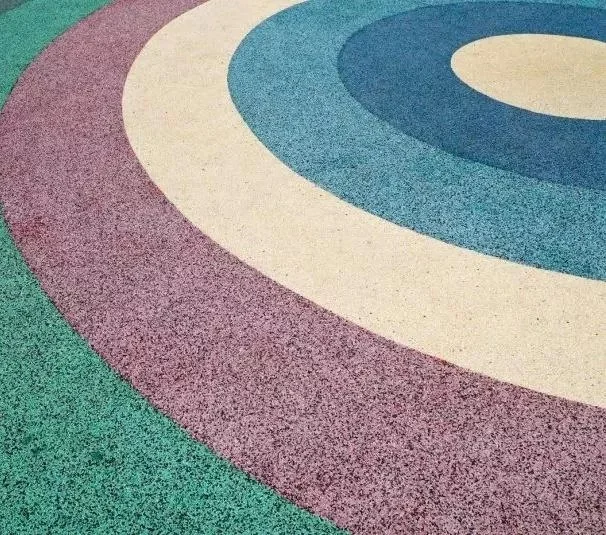
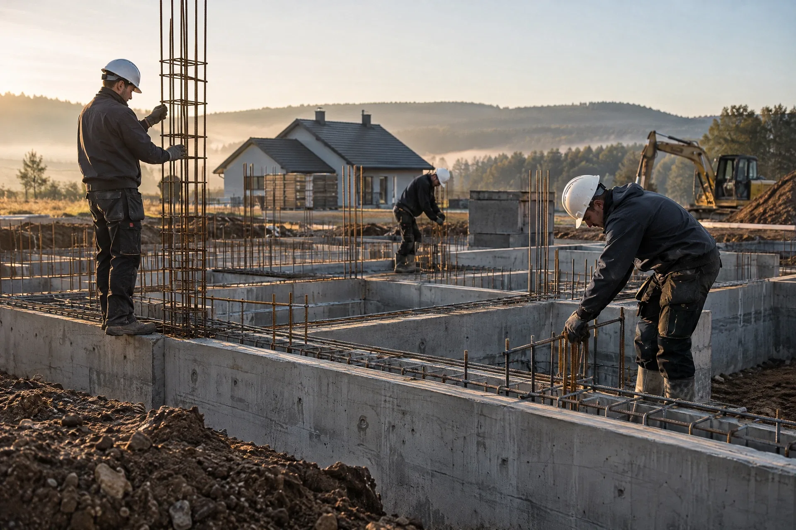

Ландшафтный дизайн
Зонирование, маршруты, газон, деревья и посадки. Сначала определяем, как вы хотите пользоваться участком, затем связываем всё в общий план.
К черновику проектаДом, инженерия и благоустройство
Дом, инженерные сети, баня, терраса и бассейн: одна команда, один договор и ответственность за результат от геодезии до чистовой отделки.

Фундамент, стены, кровлю, отопление, электрику, воду, баню и бассейн делает одна команда по одному договору.
Монолитный фундамент, стены из газобетона D400/D500 или керамоблока, плоская или скатная кровля.
К черновику проектаЭлектрика 15 кВт, отопление PE-Xa, коллекторы, септик глубокой биоочистки и ввод газа.
К черновику проектаКедровые парные, тёплые веранды, безрамное остекление, чаши бассейнов и благоустройство.
К черновику проектаУкладка покрытий из резиновой крошки EPDM для детских и спортивных площадок, дорожек и зон у бассейна.
К черновику проектаОбсудим расположение объекта, наличие сети и технических условий. Возможность подключения, состав работ и стоимость определяются индивидуально.
К черновику проектаУкладка покрытий из резиновой крошки EPDM — для игр, спорта и отдыха.
Подберём решение под назначение площадки. Перед расчётом обсудим площадь, нагрузку, подготовку основания и отвод воды.
Оттенки на экране условные. Цвет выбирается по образцам.
К черновику проекта


БЛАГОУСТРОЙСТВО УЧАСТКА
Утренний кофе на террасе, вода в пруду, дорожка к бане и мягкий свет по вечерам. Продумываем участок как продолжение дома — для отдыха, движения и встреч с близкими.
 Иллюстрация решения
Иллюстрация решенияЗонирование, маршруты, газон, деревья и посадки. Сначала определяем, как вы хотите пользоваться участком, затем связываем всё в общий план.
К черновику проектаСпокойное место в саду. Обсудим расположение и форму, устройство чаши, фильтрацию, оформление берегов и дальнейший уход.
К черновику проектаЗона, в которой хочется проводить лето. Продумываем чашу бассейна, оборудование, место для шезлонгов, покрытия и удобный выход из дома.
К черновику проектаВъезд, парковка, прогулочные дорожки и площадка для игр. Подбираем материалы под нагрузку, учитываем уклоны и отвод воды.
К черновику проектаПосадки с учётом освещения, почвы и времени, которое вы готовы уделять саду. Обсудим газон, цветники и систему полива.
К черновику проектаПодсветка дорожек и растений, ливневая система и дренаж. Инженерные решения продумываем вместе с ландшафтом — до укладки покрытий.
К черновику проектаДля первого обсуждения пригодятся план участка, примерные размеры и несколько фотографий. Можно заказать весь комплекс или отдельную работу.

Геология, монолитная плита, тёплый контур и кровля. Сроки определяются после изучения проекта и участка.
Парная из кедра, терраса и бетонная чаша бассейна.

Коллекторное отопление, электрика и ввод сетей с испытаниями.
Иллюстративный ролик о строительстве. Не съёмка выполненного объекта.
Собрать проект домаВыберите площадь, комплектацию, материал стен и работы на участке. Актуальный состав появится рядом — его можно добавить в редактируемый черновик.
Это предварительный список пожеланий, не смета и не договор. Материалы, стоимость и сроки уточняются после обсуждения участка и проекта.
От 60 до 400 м², шаг 5 м²
Состав добавится в конец. Ваши записи останутся на месте.
Сначала геология и точки подключения, потом проект и смета, потом договор и стройка.
Нивелируем участок, оцениваем грунты и точки подключения.
Собираем состав работ, материалы и календарный план.
Фиксируем стоимость этапов, сроки и ответственность.
Ведём объект с фотоотчётами о скрытых работах и передаём участок с документами.
Какие работы и материалы входят в смету, а что рассчитывается отдельно.
Когда начинается и заканчивается каждый этап, как принимается результат.
На какие работы распространяется гарантия, каков её срок и порядок обращения.
Текущий конфигуратор помогает выбрать состав работ и не рассчитывает стоимость.
«Нам было важно не собирать пять бригад. Здесь один инженер вёл и коробку, и отопление — вопросы решались в одном чате».
«Калькулятор дал понятный порядок цифр ещё до встречи. В итоге смета по основным этапам совпала с договором».
«Понравилась инженерная дисциплина: фото скрытых работ, испытания и понятная передача каждого этапа».
Стоимость зависит от комплектации, грунтов, материалов и инженерных решений. Конфигуратор помогает собрать состав работ для индивидуального расчёта.
Сроки каждого этапа фиксируются в договоре. Продолжительность зависит от проекта, технологии и условий участка.
Сроки и ответственность сторон согласуются до начала работ и закрепляются в договоре.
Срок и условия гарантии определяются для конкретных работ и закрепляются в договоре.
Позвоните по номеру +7 (499) 130-66-16{{MESSENGER_FAQ}}
{{CONTACT_LEAD}}
Поле — для состава работ и общих пожеланий. Не указывайте ФИО, телефон, точный адрес, данные документов и другие персональные сведения.
Черновик остаётся в памяти вкладки. Перед закрытием страницы скопируйте его или скачайте TXT. О технических данных при загрузке сайта — на странице «Данные и конфиденциальность».
{{MESSENGER_STEPS}} {{MESSENGER_ACTIONS}}Отправка через сайт пока недоступна. Для обращения используйте телефон или доступный мессенджер.
Черновик существует в памяти вкладки; копирование и скачивание сохраняют текст у вас. Серверная отправка сейчас отключена. В коде сайта нет аналитики и рекламных cookies.{{MESSENGER_DRAFT}}
Сайт размещён на SpaceWeb. При загрузке страниц и файлов хостинг получает IP-адрес и технические параметры запроса. При проверке 23 ноября 2026 года в панели были отключены журналы посещений, ошибок и AWStats; служебные журналы провайдера этим не исключаются. Их сроки хранения и условия обработки отдельно не подтверждены.
{{MESSENGER_SUMMARY}}Подробнее — «Данные и конфиденциальность». Это техническое описание сайта; полная политика с реквизитами оператора будет опубликована после их подтверждения.